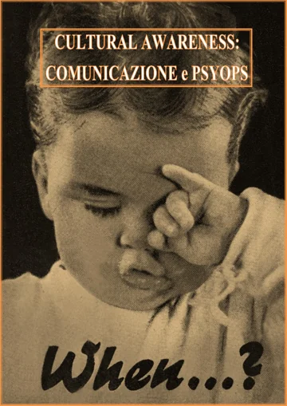

ARTICOLO · 15 minuti di lettura
Dal “What If” al “What Is”
Perché avere un’idea non basta: bisogna farla vivere
Leggi l’articoloLETTURE E APPROFONDIMENTI
Sei articoli da leggere online e due contributi originali in PDF. Concetti, contesti ed esperienza nel percorso di Tommaso Corona.
8 letture
ARTICOLO · 15 minuti di lettura
Perché avere un’idea non basta: bisogna farla vivere
Leggi l’articoloARTICOLO · 10 minuti di lettura
Scrolliamo emozioni, non argomentazioni.
Leggi l’articoloARTICOLO · 30 minuti di lettura
Percezione, realtà costruita e conflitto per il significato in una società polarizzata
Leggi l’articoloARTICOLO · 12 minuti di lettura
Appartenenza, identità e responsabilità della parola
Leggi l’articoloARTICOLO · 9 minuti di lettura
Il percorso junghiano della crescita psicologica
Leggi l’articoloARTICOLO · 7 minuti di lettura
Costruzione del nemico: quando la polarizzazione diventa struttura
Leggi l’articoloDALL’ARCHIVIO DELL’AUTORE
Apri il documento in una nuova scheda oppure scarica il file originale.

2012 · PDF · 18 PAGINE · 2,7 MB
Il PDF comprende anche il contributo «Volantini sulla Libia».

2021 · PDF · 4 PAGINE · 5,3 MB
L’operazione Aquila Omnia nel racconto dei Fucilieri dell’Aria.
Nessuna lettura corrisponde alla ricerca. Prova un’altra parola.